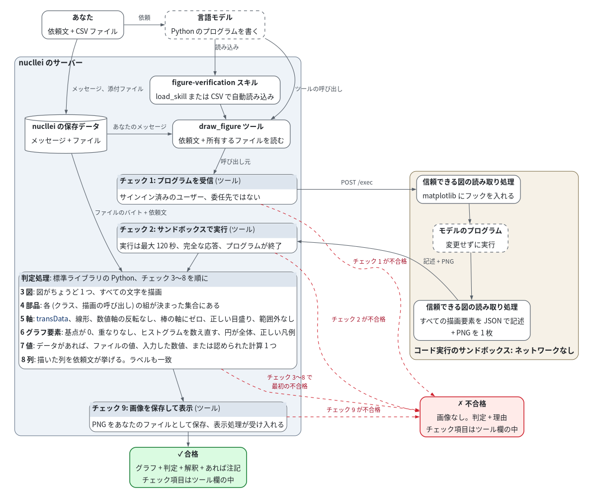

nucllei の図のチェック
draw_figure でグラフを表示するためのすべての規則を、実行順に示します。チェックする内容、その方法、
不合格のときのコードです。折りたたまれたツール欄を開くと、チェック項目を読めます。
各行は、ここにある対応する節にリンクします。詳細 (オンライン) は、共通の図の規則と
Open WebUI の実行経路を説明します。例: グラフの例。English
検証器のしくみ

各チェックは 1 行の要約です。すべての規則は下の表にあります。破線の枠: 言語モデルが書くもの。 赤い破線の矢印: 不合格のチェックでグラフが止まる場所。
- 読み込み。 nucllei は
load_skillでfigure-verificationスキルを読み込みます。 CSV の添付時には自動で読み込みます。このスキルで、モデルがdraw_figureを使えるようになります。 - 呼び出し。 モデルは完全な Python プログラムを
draw_figureに送ります。ツールは、保存した チャットの分岐から、あなた自身のメッセージとファイルを読みます。実行の前に呼び出し元を確認します。 - 実行と読み取り。 ツールは、まず添付ファイルを、リンクをたどらないサンドボックスのファイル
書き込みで
/workspace/imports/に置きます。次に、あなたのコード実行用サンドボックスに/execの呼び出しを 1 回送ります。中身は、信頼できる図の読み取り処理と、変更しないプログラムです。 読み取り処理は matplotlib にフックを入れ、プログラムを実行し、各図を 1 回描画します。 すべての描画要素を JSON で報告します。クラス、描画の呼び出し、変換、座標、 軸、目盛り、色、大きさ、表示状態、各hist、pie、fill_between、stackplotの入力です。 PNG も 1 枚返します。別の受領記録やブラウザ内のコード実行環境は使いません。 - 判定。 nucllei のサーバーで、標準ライブラリの Python が記述に次の規則を順に適用します。 最初の不合格でグラフが止まります。描画した値をファイルと依頼文に照らして比べます。 モデルも推測も使いません。
- 表示。 合格した場合、ツールは PNG をあなたのファイルとして保存し、判定、解釈、モデルの注記 があればその注記と一緒に表示します。不合格の場合、画像と注記なしで判定と理由を表示します。 これらは折りたたまれたツール欄の外に表示します。チェック項目はその欄の中に表示し、モデルにも送ります。 表示処理に失敗した場合は、ツールの結果で理由を確認してください。
チェックしない内容: グラフが質問に答えているかどうか。グラフ上の文字 (text、annotate、
bar_label)。返信はこれを一覧にします。モデルの注記や返信文。プログラムそのもの。
プログラムは検証器を欺かないことが前提です。チェックの前に、読み取り処理と同じインタープリターで
実行し、添付ファイルを読めます。検証器は、サンドボックス、インタープリター、matplotlib、フォント、
ブラウザ、画面上のピクセルを信頼しています。サンドボックスにはネットワークがありません。
run_python や fetch_from_workspace などの別のツールは、このスキルのチェックを通さずに
グラフを表示できます。
1. モデルからグラフのプログラムを受信
| 規則 | 方法 | コード |
|---|---|---|
| サインインしているユーザーからの依頼 | draw_figure が呼び出し元のユーザー ID を受け取る |
no_user |
| 委任先ではなく、ユーザーのチャットでの呼び出し | メタデータに agent_session がある場合、ファイルの読み取りやコードの実行の前に拒否する |
delegated_session |
2. サンドボックスでプログラムを実行
| 規則 | 方法 | コード |
|---|---|---|
| コード実行のサンドボックスが応答 | nucllei のサンドボックス用クライアントで、添付ファイルごとに POST /files/write を 1 回、次に POST /exec を 1 回送り、接続に失敗したら不合格 |
sandbox_unreachable |
| プログラムがサンドボックスの制限時間内 | ファイルの書き込みはそれぞれ最大 120 秒待ち、実行には 120 秒を指定し、その応答は最大 150 秒待つ。サンドボックスが短い上限を適用する場合もある | sandbox_timeout |
| サンドボックスの実行が成功 | ファイルの書き込みか実行の HTTP の拒否、またはゼロ以外の exit_code は不合格 |
sandbox_error |
| 応答が想定の形式で、途中で切れていない | exit_code が整数、stdout が読み取り処理の出力上限内のテキスト、stdout_truncated が false |
reply_malformed |
| 実行結果が図を報告 | stdout に、読み取れるタグ付きの記述の行が 1 つある |
no_description |
| 正しい Python | 読み取り処理がプログラムをコンパイルし、SyntaxError がない |
program_syntax_error |
| プログラムが例外なく最後まで実行 | 読み取り処理がプログラムを実行し、例外とその行をとらえる | program_error |
| コード実行のサンドボックスにあるモジュールを読み込む | 例外がモジュール不足のエラーではない。使用できるものはサンドボックスのインストール済みパッケージで決まる | module_not_available |
| 軸 24 個、部品 2,000 個、座標 20,000 個、1 つのテキスト 1,000 文字まで。図の記述 400,000 バイト、PNG 500,000 文字まで | 読み取り処理が記述しながら数え、上限を超えた図を大きすぎると報告する | figure_too_large |
3. 図を 1 つ描画
| 規則 | 方法 | コード |
|---|---|---|
| matplotlib の図がある (pandas のグラフも該当) | 読み取り処理が、プログラムが表示した図と開いたままの図をすべて集める | no_figure |
図は 1 つだけ (plt.subplots のパネルは可) |
その数が 1 | multiple_figures |
| すべての文字が使用できるフォントにある | 読み取り処理が、グリフ不足の警告、mathtext のグリフ不足の記録、パスのテキストの .notdef グリフを数える。ラッパーが jail の Noto Sans CJK JP を通常のテキストに登録する。mathtext は対象外 |
glyph_missing |
| 検証器が内部エラーなく終了 | ツールで想定外の例外が起きた場合は不合格 | verifier_error |
4. 検証器がチェックできる部品だけを使用
読み取り処理は、各描画要素のクラスと、それを作った描画の呼び出し (作成時のスタックで最も外側の
matplotlib.axes のフレーム) を記録します。その組み合わせは、次の決まった集合に含まれる必要が
あります。折れ線 (plot、step)、点 (scatter)、棒 (bar、barh、グループ化、積み上げ)、
ヒストグラム (hist、塗りつぶし、データセット 1 つ)、円 (pie)、面 (fill_between、
stackplot)、基準線と帯 (axhline、axvline、axhspan、axvspan)、テキスト (タイトル、
軸ラベル、凡例、目盛りのラベル、text、annotate、bar_label)、散布図の色を示すカラーバー。
| 規則 | 方法 | コード |
|---|---|---|
画像なし (imshow、pcolormesh、matshow) |
描画要素の木に AxesImage、QuadMesh、FigureImage がない |
raster_image |
| 通常の軸だけ。極座標、3D、挿入図、副軸なし | 各軸のクラスがちょうど Axes で、図に属し、ほかの軸の中にない |
axes_not_judged |
2 軸なし (twinx、twiny) |
同じ位置で x 軸または y 軸を共有する 2 つの軸がない | axes_twin |
| 重なるパネルなし | 軸の位置が重ならない | axes_overlap |
| ほかの部品なし (エラーバー、箱ひげ図、等高線、追加した図形、step のヒストグラム) | すべての (クラス、呼び出し) の組が上の集合にある。または描画の呼び出しなしにプログラムが加えたキー（幅と高さが 0 の Rectangle、または点のない Line2D）で、パネル自身の凡例が使うもの（seaborn の hue） |
artist_not_judged |
| すべてのパネルにデータ | 各軸にデータの描画要素がある | no_data |
5. 正しい軸
| 規則 | 方法 | コード |
|---|---|---|
| 各部品がデータの値の位置にある | 各データの描画要素の変換が軸の transData (棒: データの変換、散布図: オフセットの変換) |
mark_not_in_data |
線形の目盛り。対数は、軸ラベルかパネルのタイトルに log、logarithmic、対数 がある場合だけ |
axis.get_scale()。log の場合は、NFKC と大文字小文字の統一の後のラベルとタイトル |
scale_not_linear |
| 数値と日付の軸は反転なし | axis.get_inverted() と軸の種類。テキストのカテゴリのキー軸（カテゴリ軸、または pandas かプログラムがラベルを付けた位置）は反転してよい（カテゴリを逆の順に並べるだけ） |
axis_inverted |
| 棒、ヒストグラム、面の値の軸の範囲にゼロ (折れ線と散布図は拡大可) | 0 が値の軸の get_view_interval() の中にある |
zero_not_in_limits |
| 表示される各目盛りのラベル = その位置の値 | 範囲内の各ラベルをカテゴリ、日付、数値 (フォーマッターの指数とオフセットを含む) として読み、目盛りの位置と、最後の桁の半単位以内で一致 | tick_label_mismatch |
| すべてのデータ点、棒の端、基準線が軸の範囲内 (円は対象外) | 描画したすべての座標が get_view_interval() の中にある。NaN または無限大の座標があるパネルは次のチェックに回す |
point_clipped |
| 部品が自分のクリップで隠れない | 描画要素のクリップの矩形が軸の矩形と同じでクリップのパスがない、またはクリップが無効 | point_clipped |
6. 正しいグラフ要素
| 規則 | 方法 | コード |
|---|---|---|
| すべての部品とパネルが表示され、見える | 各描画要素の表示状態、アルファ、塗りと線の色、線の種類、破線の長さ、点の数、マーカーの大きさ、塗り、縁の幅、形、棒の幅 | mark_hidden |
| 折れ線のすべての点を表示 | 線を描かない折れ線は、すべての点にマーカーがある (markevery なし) |
mark_hidden |
| すべての値が有限。欠落した点なし | 描画したデータと記録した呼び出しの入力に NaN も無限大もない。各帯は呼び出しが受け取ったすべての点を描く | value_not_finite |
| 棒はゼロ、または積み上げた棒の上端から | 各棒の基点が 0、または同じ位置と幅の棒の先端とちょうど一致 | bar_not_from_zero |
| 重なる棒なし | 面積が 0 を超えて交わる棒の長方形がない | bars_overlap |
| 系列ごとに同じ棒の幅 | 1 つの棒コンテナのすべての棒が最初の棒と同じ太さ（ヒストグラムは対象外: 幅はビン） | bar_width_varies |
| 折れ線の x の値は一方向 | 各折れ線の x の位置が単調 | x_not_ordered |
| ヒストグラムの高さ = ビンごとのデータの度数または密度 | 判定処理が、記録した hist の入力を描画したビンの境界で数え直す (numpy の規則、最後のビンは閉区間)。すべてのデータがビンの中。重みと cumulative なし |
hist_counts |
| 円の扇形が 360° を満たし、各扇形 = 合計に対する割合 | 各扇形の角度 = 360° × 値 / 記録した pie の入力の合計 (誤差 0.0001° 以内)。半径は 1 つ、すき間なし |
pie_not_whole |
| 面はゼロ、または積み上げた面の上端から | 各帯の下端が 0、または同じ x でゼロから積み上げた帯の上端とちょうど一致 | area_not_from_zero |
| 散布図の大きさが異なる場合: 大きさの凡例 | 大きさが異なるのは、そのコレクションの legend_elements("sizes") の凡例、または点のない散布図 (scatter([], [], s=…)) の凡例がある場合だけ。各キーは大きさを 1 つ持ち、パネル内のちょうど 1 つのコレクションがその大きさを描き、ラベルがその大きさの数値を書く。凡例の markerscale は 1 |
marker_size_varies |
| 散布図の色が異なる場合: カラーバーまたは色の凡例 | 塗りの色が異なるのは、そのコレクションのカラーバーか legend_elements() の凡例がある場合だけ |
marker_color_varies |
| 凡例の項目は描いた系列を示す。凡例のあるパネルに系列が 2 つ以上: すべての系列を示す | 凡例の各ハンドルが判定対象の描画要素、グラフ要素のラベルと色を持つ代理、またはパネル内のそのような大きさ 0 のキー（seaborn の hue）で、ラベルのない系列 1 つだけと同じ色、またはデータ座標で点から点へ描かれ、ちょうど 1 つの帯のゼロでない縁と一致する線（その帯を示す）。1 つの系列の名前は 1 つ |
legend_mismatch |
7. 描画した値があなたのデータにある
系列とは、1 本の折れ線、散布図のコレクション、棒のコンテナー、円、面の帯、基準線、ヒストグラムの 入力のいずれかです。判定処理は各系列について、次の決まった一覧から、値が点と完全に一致する (同じ 64 ビットの浮動小数点数) CSV の説明を 1 つ探します。CSV の 1 行が裏付けるのは 1 点だけです。 その説明で残った点は、入力した数値である必要があります。
- CSV ファイル: 列の値、またはグループごとの
sum、mean、min、max、countのいずれか 1 つ。pandas と同じ方法で、ビット単位まで同じに計算します。一部の行だけでも合格し、返信は それを示します (たとえば6 件中 2 件を描画)。 - 依頼文: NFKC の後の入力した数値、展開した範囲 (
1 to 10、1 through 10、1–10、1〜10、1から10まで。1-10は範囲になりません。最大 10,000 個)、入力したカテゴリのラベル。 - それらの 1 つの計算: 1 つの系列の 2 乗、累計、変化、割合、百分率。CSV の 2 つの列の比率、差、 積、和 (各行またはグループごと)。
- 基準線と帯: ゼロ、または列全体の集計 1 つも可。
- セルの値と同じ凡例のラベル: その系列は、その値を持つ行から作られている必要があります。
- キーが示す散布図の色と大きさ: 描画した値として扱い、その点と同じ行またはグループから。
- ファイルも数値もない場合: 完全性だけをチェックし、返信にそのことを示します。
| 規則 | 方法 | コード |
|---|---|---|
| CSV は 8 MB、100,000 行、128 列、1 セル 512 バイトまで | ツールが保存したチャットの分岐からユーザー自身のファイルを取得し、バイトの読み取り前に所有者を確認する。判定処理が上限を確認 | csv_too_large |
| CSV を読み取れる | pandas.read_csv が同じように読む範囲に限った読み取り |
csv_not_parsable |
| 照合が作業上限内 | 判定処理が作業量を数える。最大 5,000,000 (MAX_WORK) |
work_budget_exceeded |
| 1 つの系列で各カテゴリは 1 回 | 1 つの系列で同じキーを持つ 2 点がない | category_not_unique |
| 描画したすべての値が出所にある | 上の探索がすべての点の説明を見つける | value_not_found |
| 入力したすべてのカテゴリのラベルが依頼文にある | NFKC と大文字小文字の統一の後、ラベルが依頼文にある | label_not_in_request |
8. 描いた列が依頼と一致
CSV のグラフだけが対象です。描いた列とは、チェック 7 で見つかった説明の列です。判定処理は、
NFKC と大文字小文字の統一の後、依頼文をファイルの見出しと照合します。対象は、単語単位の一致
(日本語の名前は包含)、5 文字以上の 1 語の名前の 1 文字の誤り、管理者が登録した別名、本番環境では
日本語の短い形 (年月 に対する 月、月別) です。
| 規則 | 方法 | コード |
|---|---|---|
| 依頼文にある列を別の列に置き換えない | 挙げた列を描かず、挙げていない列を描くことがない | column_not_requested |
| 値が 2 つの列に当てはまる場合: 依頼文がどちらかを挙げる | 列の異なる 2 つの説明がある場合、依頼文がちょうど一方の列を挙げる | column_not_requested |
| 本番環境: 依頼文が列を挙げるか除外する場合、描いた列をすべて挙げる | 描いた各列が、挙げた列に含まれる | column_not_named |
| タイトル、軸ラベル、凡例、カラーバーのラベル: 描いていない列なし。グループごとの合計または平均には、ほかの集計なし | 同じ照合で、各ラベルを見出しと集計の語に照らして読む。凡例の系列名がその値である列は、描いた列とみなす | label_not_consistent |
9. 返信に画像を表示
| 規則 | 方法 | コード |
|---|---|---|
| 実行結果の PNG がちょうど 1 枚 | stdout に 500,000 文字以下の有効な PNG のデータ URI の行がちょうど 1 つある |
no_image |
| サーバーが画像を保存して表示 | Storage.upload_file と Files.insert_new_file で PNG を保存し、呼び出し元を所有者にする。表示処理が返信を受け入れる |
publish_failed |